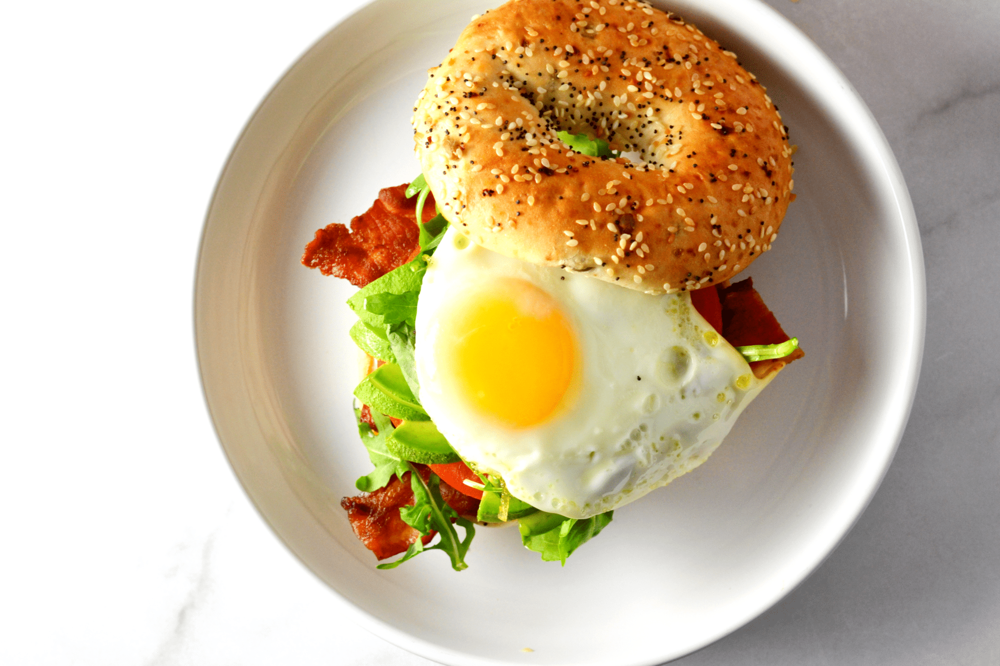

A hearty breakfast fired-egg bagel sanwich will start your day off with carbs and protein
Ingredients
- One toasted organic bagel of your choice (we recommend an "everything" bagel)
- 1/2tbsp of organic cream cheese
- One egg, fried
- One slice, cheese of your choice
- Organic mixed greens
- Organic sliced onion pieces, or other sides of your choice
- Seasonings (garlic powder, etc.) of your choice
Steps
- Toast bagel to desired consistency
- Fry egg:
- Add sides (mixed greens, seasonings, etc) of you choice
- Enjoy!
Return to top
Return to main page